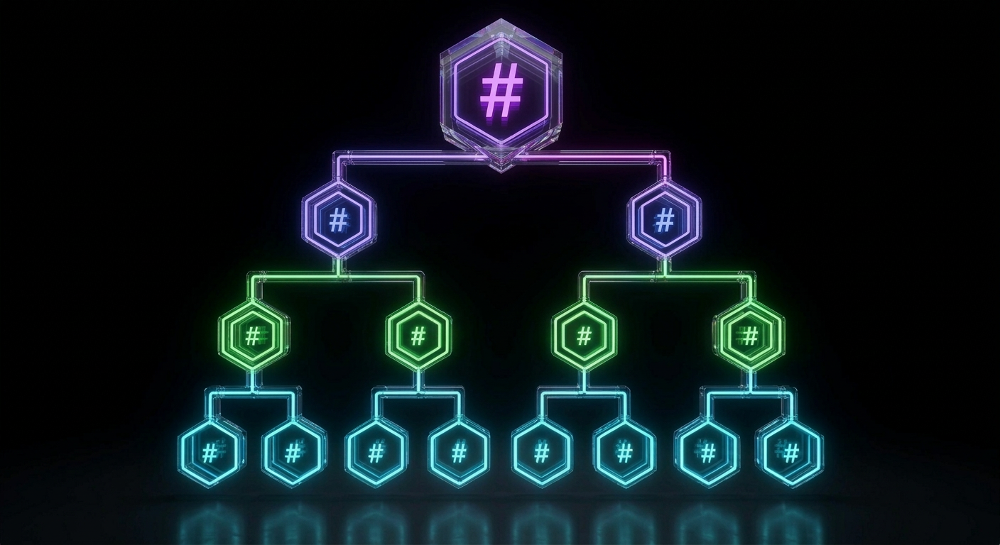

Sequence numbers for speed. Merkle trees for correctness. Real-time bidirectional database sync over Phoenix channels.
import { SyncClient } from 'synclib-sync'; const sync = new SyncClient({ db, serverUrl: 'wss://api.example.com/socket', clientId: 'user-123', channels: [{ topic: 'sync:user:user-123', role: 'bidirectional', tables: [{ name: 'todos' }], }], }); await sync.initialize(); await sync.connect(authToken);
Initialize a sync client, connect, and your local database stays in sync automatically.
import { SyncClient } from 'synclib-sync'; const sync = new SyncClient({ db, serverUrl: 'wss://api.example.com/socket', clientId: 'user-123', channels: [{ topic: 'sync:user:user-123', role: 'bidirectional', tables: [{ name: 'todos' }], }], }); await sync.initialize(); await sync.connect(authToken);
final sync = SyncClient( config: SyncClientConfig( db: db, serverUrl: 'wss://api.example.com/socket', clientId: 'user-123', channels: [ SyncChannel( topic: 'sync:user:user-123', role: ChannelRole.bidirectional, tables: [SyncTable(name: 'todos')], ), ], ), ); await sync.initialize(); await sync.connect(authToken);
Fast incremental updates and cryptographic correctness guarantees, working together.
Fast incremental sync

Layer 2Cryptographic consistency guarantee
Everything you need to ship offline-capable, multi-platform applications.
Local SQLite database with automatic change tracking. Works without a connection, syncs when online.
Push, pull, or bidirectional per channel. Configure each channel's sync direction independently.
Server-driven schema migrations. Clients stay in sync with the latest database structure.
TypeScript/JavaScript for web and Node.js. Dart/Flutter for iOS, Android, and desktop.
Built on Elixir's Phoenix framework for scalable, fault-tolerant real-time communication.
JWT authentication on every connection. Server-side row filtering ensures no data crosses the wire unless the user is authorized to see it.
The same Phoenix channels carry any real-time data — livestreaming, live events, WebRTC signaling, chat, and custom app messages.
Handle custom message types with hooks. Add app-specific events without forking the library.
Clients sync with the server over persistent WebSocket connections.
Open source, MIT licensed. Each library is independently usable.
Keep your Firestore API calls — swap the backend to local SQLite with sync. Change one import and your existing code just works.
// Before: import { getFirestore } from 'firebase/firestore'; // After: import { FirebaseFirestore } from 'synclib-firestore'; // Your code stays the same: const doc = await firestore.collection('todos').doc('abc').get();
synclib is fully open source and self-hostable. But if you'd rather not manage infrastructure yourself, we offer hosted sync backends and hands-on deployment support — from initial setup to production.
Contact us → contact@synclib.io